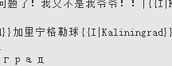
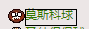
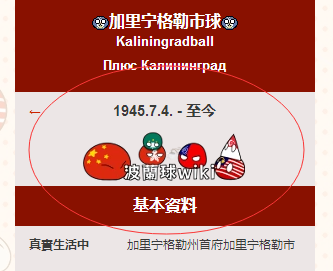
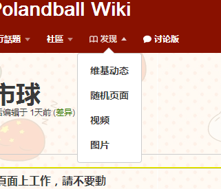
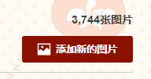
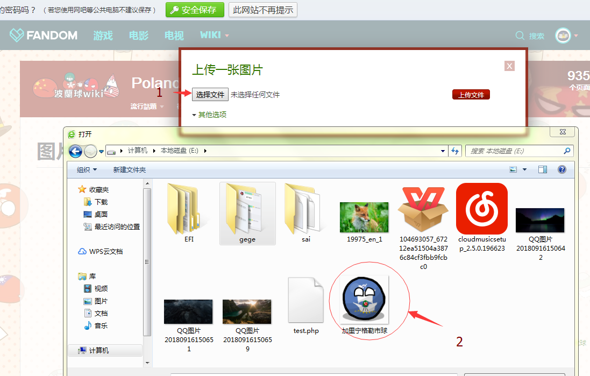
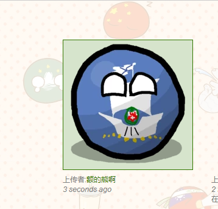
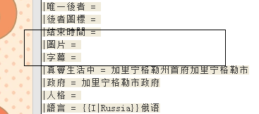
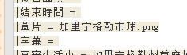
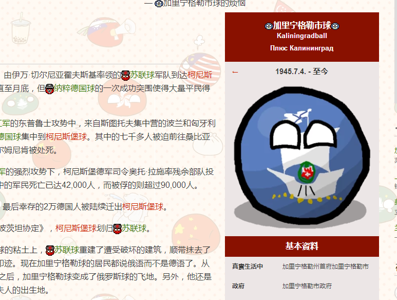

1.2.1:其他杂项-最后一个，怎么召唤出icon、搞跳转链接和添加头图？
首先是icon，唤出icon其实很简单。比如这个教材里面，加列宁格勒市球的icon召唤代码是{{I|Kaliningrad}}，而Kaliningrad是加列宁格勒的英文，以此类推，美国的英文（现在多用缩写）是USA，所以召唤美国球的代码是{{I|USA}}。中国英文是China,所以是{{I|China}}。

注意！！icon的名称是区分大小写的，也就是说，如果你输入{{I|usa}}，是没办法召唤美国球的图标的。
此外，就是搞跳转链接，它可以让一些被特地指出的字成为可以点击跳转的字符（变成绿色）。跳转链接很简单，分两种，格式固定。例如:

这种只在站内（仅指中文波兰球维基）跳转，可以用“[[你想要输入的球]]”来调用，比如上面的莫斯科球，它在源码里是[[莫斯科球]]。（如果波兰球维基里没有有关的球，它就会显示红色）
最后，如何添加头图？没有头图，那就会和下面这张图这样，很违和，不美观。

很简单，上传图片。怎么上传图片呢？展开“发现”这一栏，打开“图片”选项，接下来看图:

图片上传好了，可是页面还没有头图，怎么贴上去呢？
打开源代码编辑，基本资料模板内，有一个“圖片”，在这一栏输入你刚刚上传的图片名称即可
